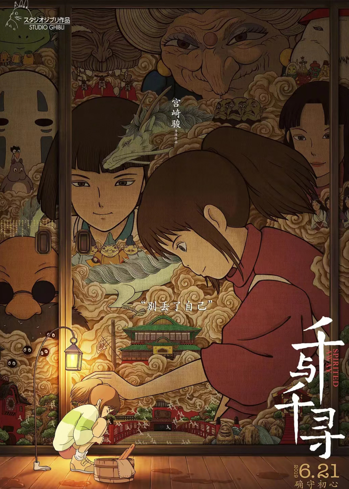
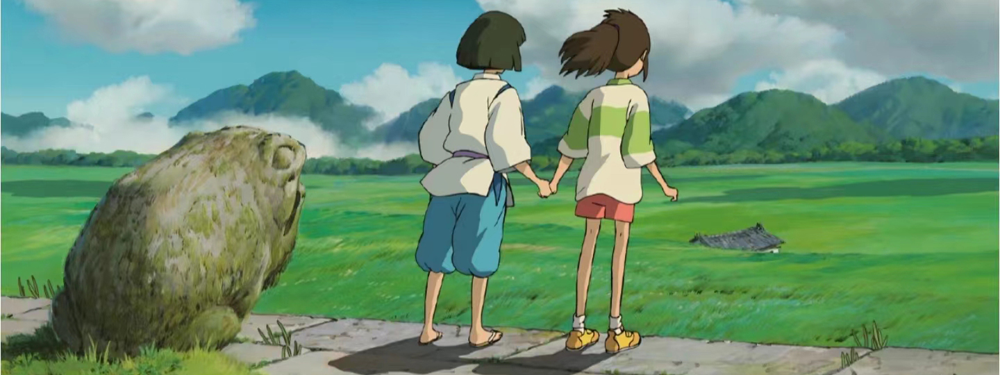
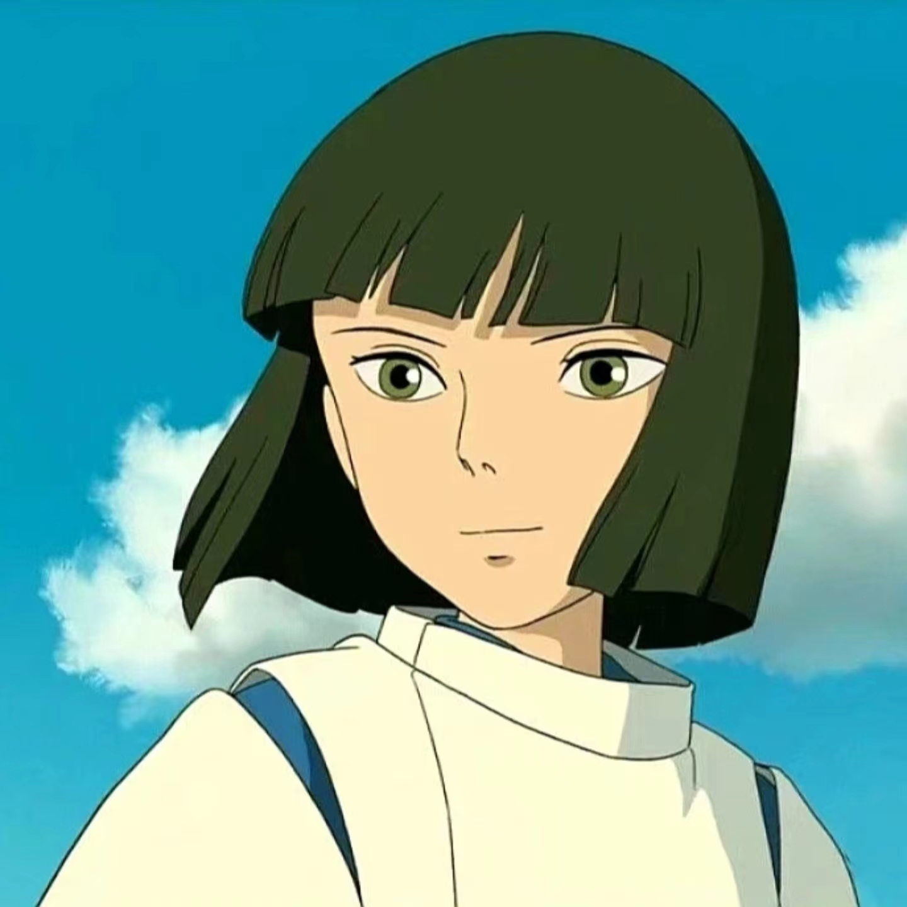
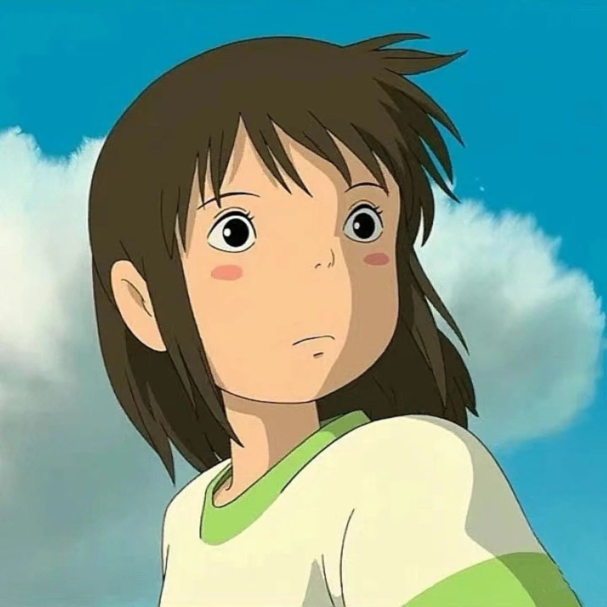
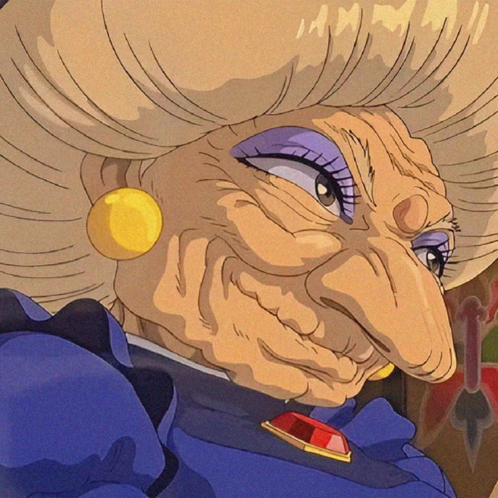
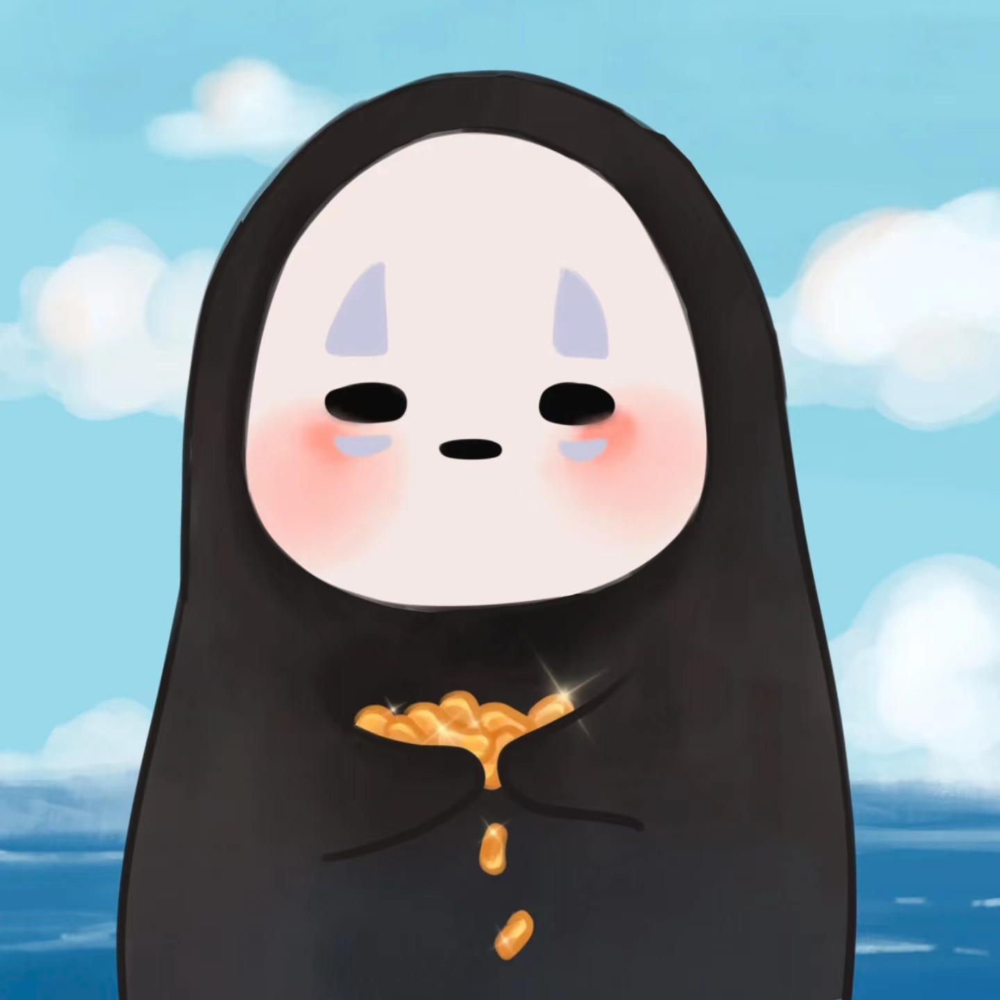
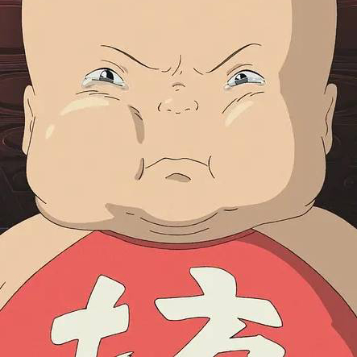

推荐作品 - 《千与千寻》


《千与千寻》是由吉卜力工作室制作的动画电影，由宫崎骏执导，柊瑠美、入野自由、中村彰男、夏木真理等人担任主要配音。该片主要讲述了千寻意外来到神灵世界后，为了救因惩罚而变成猪的家人，经历许多磨难的故事。2001年7月20日在日本上映。2019年6月21日在中国大陆公映。2022年8月5日起在中国台湾地区重映数字修复版本。
有点娇气任性的10岁少女千寻（柊瑠美 配）跟随父母搬往新家，途中误入一座神庙，来到了另一个世界：一条专门给神仙提供服务的热闹非凡的浴场街。双亲因为吃了给神准备的美食而被变成了猪。千寻仓皇逃出，此时，一个叫白（入野自由 配）的男孩出现并救了她，在白帮助下千寻得以安身。为了等待机会救出父母回到自己的世界，首先要为掌管镇中大浴场的魔女汤婆婆工作（夏木真理 配），第二要被她剥夺名字，千寻便改名为“千”。在这里有指导她工作的小玲（玉井夕海 配）、负责煲洗澡水的锅炉爷爷（菅原文太 配）、煤炭屎鬼、以及入侵浴场捣乱的无面男等，在大家的激励下，千寻以自己的纯真之心屡屡化险为夷，并交到了许多新朋友。最终，千寻拯救了白，发现了他的真实身份。然而要救出双亲，她还必须面临严酷的考验。
影片通过千寻的故事，用深入浅出的方式讲述独自面对社会的成长历程，是宫崎骏献给所有年龄观众的一份“成长礼物”。当下正逢高考之际，对于即将踏入社会的考生而言，《千与千寻》也是一份极佳的“成人礼”。在成长的第一阶段，每个人都会经历进入陌生环境的慌张，就像千寻初入神隐世界的惊慌失措。在第二阶段，人们会遇到诱惑，做出抉择，就像在汤屋中，有人像无脸男一样沉沦变成怪物，也有人像千寻一样一直坚守本心。第三阶段是成长中无法逃避的离别，就像片中有去无回的人生火车，每个人只能陪你走一段路，当有人下车时只能挥手告别。

白龙

荻野干寻

汤婆婆

无面男

坊宝宝